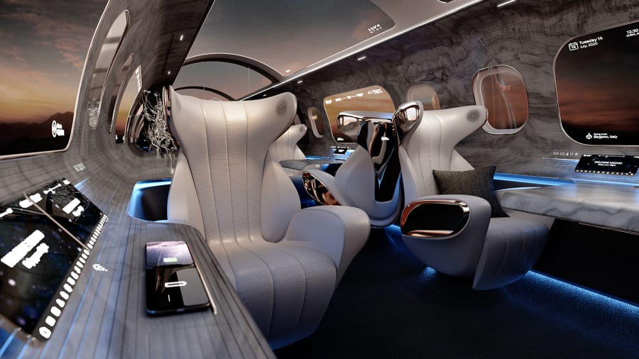

Languages: C, C++, Java, C#
Peripherals: I2C, SPI, USB, RS-232, GPIO
Hardware: Mostly iMX8 SoM
Overview
- Developed and sustained applications in Java, services in C++, and Linux drivers in C within Android Open-Source Project
- Increased internal efficiency by automating manual systems with production applications in C#
- Designed hardware specific software solutions for NXP’s i.MX8 SoM
- Facilitated future ease for project revisions and file system development using Bash scripts and creating software blogs
During my time at Rosen Aviation, I have been developing and sustaining software in an Android/Linux based ecosystem with an increased focus
on agile development in a waterfall environment. There is a broad spectrum of project experiences from embedded firmware improving
our customer's experience to large scale applications increasing internal efficiencies. Since most of our products utilize the
Android Open-Source Project, there is a heavy emphasis on design using C++ and Java. Since December 2021, I have also been
the leader of the Rosen Green Team (Sustainability Committee). When I first started, a phrase was constantly thrown at me to reference what I was undertaking:
"drinking from the fire hose." In the beginning, I don't think it really felt that way. It just felt like you do more because working full time
as an engineer is a lot different from school and there is a lot to learn. Looking back, however, it is clear we cover a very broad range of responsibilities
for a team of only five software engineers. That is something I am proud of, and I know that will help me as I navigate my career.